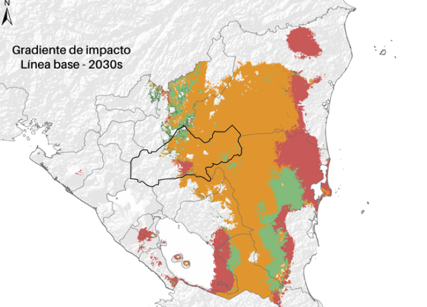

{{ Wizard(sections.clima, 1) }}
{% call CardFancy('blue', 'Precipitacion', 'Promedio mensual') %}
2500 mm
{% endcall %}
{% call CardFancy('orange', 'Temperatura Promedio', 'Promedio mensual') %}
31
{% endcall %}
{% call CardFancy('green', 'Aptitud del cacao', 'Promedio de Reduccion/Ampliacion de area de plantacion') %}
45
{% endcall %}
La informacion presentada es valida para el departamento de Matagalpa

{% call CardFancy('brown', 'Gradiente de impacto', 'Cambios en forma de cultivo', ['h-100']) %}
{{ Legend('Leyenda de temperatura', [], ['mt-4', 'shadow-lg', 'border-0']) }}
jj
{% endcall %}